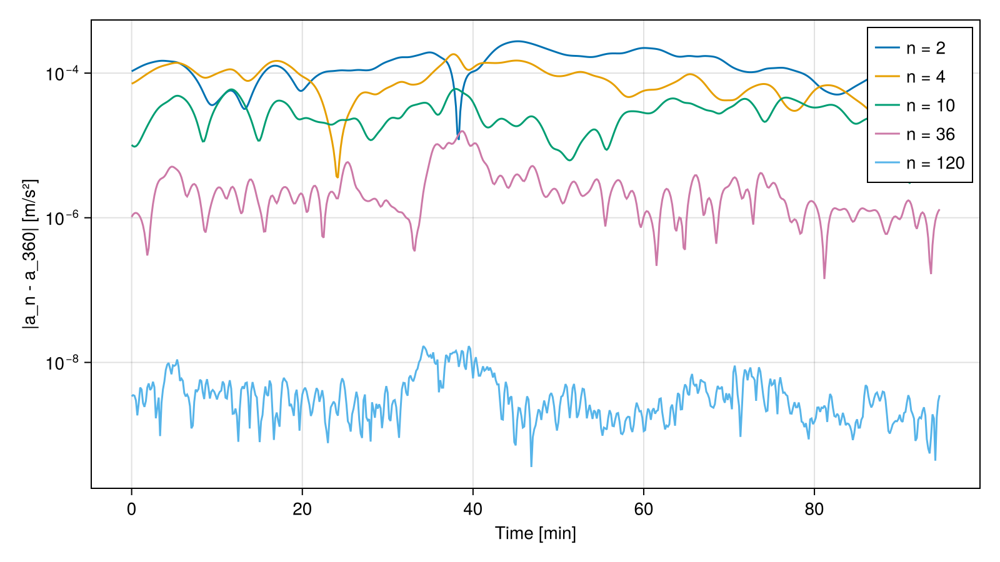
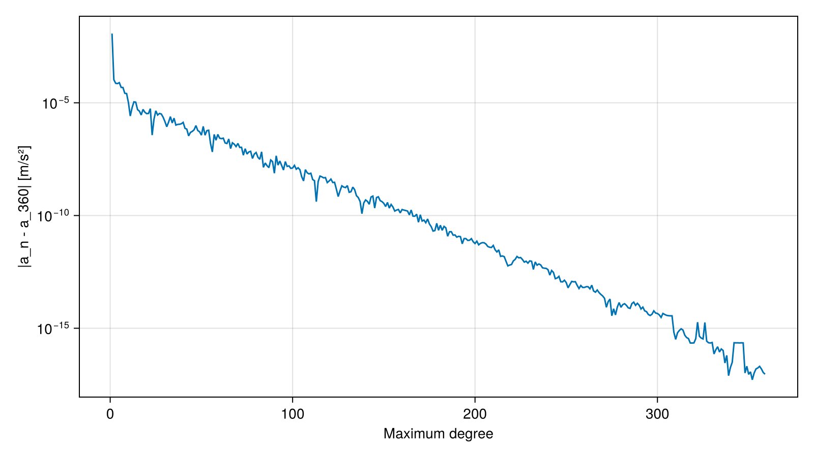

Comparing Gravity Models
In this tutorial, we will evaluate the gravitational acceleration along a low Earth orbit (LEO) using a spherical harmonics gravity model truncated at different degrees. This analysis helps us select the model complexity required by a numerical orbit propagator given the desired accuracy.
Theory
The package SatelliteToolboxGravityModels.jl computes the gravitational potential using the spherical harmonics expansion:
\[\begin{equation*} U(r, \phi, \lambda) = \frac{\mu}{r} \sum_{n=0}^{N} \left(\frac{R}{r}\right)^n \sum_{m=0}^{n} \bar{P}_{nm}(\sin\phi) \left(\bar{C}_{nm} \cos m\lambda + \bar{S}_{nm} \sin m\lambda\right)~, \end{equation*}\]
where $\mu$ is the gravitational constant, $R$ is the reference radius, $r$, $\phi$, and $\lambda$ are the geocentric distance, latitude, and longitude, $\bar{P}_{nm}$ are the fully normalized associated Legendre functions, and $\bar{C}_{nm}$ and $\bar{S}_{nm}$ are the normalized coefficients distributed in the ICGEM (International Centre for Global Earth Models) files. The gravitational acceleration is the gradient of this potential:
\[\begin{equation*} \vec{a} = \nabla U~. \end{equation*}\]
The term $n = 0$ is the point-mass acceleration. The degree-1 terms vanish when the origin of the frame is at the center of mass, and the zonal term of degree 2 is related to the Earth's oblateness by:
\[\begin{equation*} J_2 = -\sqrt{5} \, \bar{C}_{20}~. \end{equation*}\]
Truncating the expansion at $n = 2$ and $m = 0$ yields the well-known point-mass plus $J_2$ acceleration:
\[\begin{equation*} \vec{a} = -\frac{\mu}{r^3} \vec{r} + \frac{3}{2} \frac{J_2 \mu R^2}{r^5} \begin{bmatrix} x \left(5 z^2 / r^2 - 1\right) \\ y \left(5 z^2 / r^2 - 1\right) \\ z \left(5 z^2 / r^2 - 3\right) \end{bmatrix}~, \end{equation*}\]
which we will use to validate the model evaluation.
Finally, notice that the gravitational acceleration is caused by the Earth's mass only. The gravity acceleration, which is what an accelerometer resting on the ground measures, also includes the centrifugal term due to the Earth's rotation:
\[\begin{equation*} \vec{g} = \nabla U + \omega_\oplus^2 \begin{bmatrix} x \\ y \\ 0 \end{bmatrix}~. \end{equation*}\]
Orbit dynamics must use the gravitational acceleration.
Algorithm
We need to perform the following tasks to compare the model truncations:
- Load the gravity model;
- Propagate the orbit and convert the positions to the body-fixed frame;
- Evaluate the acceleration using the full model and the truncated versions; and
- Validate the truncation of degree 2 against the analytic $J_2$ formula.
Code
Before starting, let's load all the packages in the SatelliteToolbox.jl ecosystem together with the auxiliary packages used in this tutorial:
using SatelliteToolbox
using CairoMakie
using LinearAlgebra
using Printf
using StatisticsThe function fetch_icgem_file downloads the ICGEM file of well-known models to a scratch space, and the function GravityModels.load parses it. We will use the EGM96 model, which has degree and order 360:
egm96 = GravityModels.load(IcgemFile, fetch_icgem_file(:EGM96))IcgemFile{Float64, Val{:full}}:
Product Type : gravity_field
Model Name : EGM96
Gravity Constant : 3.986004415e14 m³/s²
Radius : 6.3781363e6 m
Angular Speed : 7.292115147e-5 rad/s
Maximum Degree : 360
Errors : formal
Tide System : tide_free
Normalization : full
Time-Variable Coefficients : noneThe EGM2008 model, which is also available, has degree 2190 and its file is much larger. The EGM96 is enough for this tutorial, since we are interested in the behavior of the truncation error and not in the absolute accuracy.
The evaluation functions accept a workspace that holds the buffers used to compute the Legendre functions. Creating it once and reusing it avoids allocations, which largely improves the performance when the model is evaluated many times:
N_max = GravityModels.maximum_degree(egm96)
μ = GravityModels.gravity_constant(egm96)
R = GravityModels.radius(egm96)
ws = GravityModels.Workspace(egm96)This concludes the first step of the algorithm.
We will analyze a Sun-synchronous orbit at 500 km of altitude during one nodal period, which is obtained by the function orbital_period. The J2 propagator returns the positions in the true equator of date. Hence, we use the TOD (True of Date) frame as the ECI and the PEF (Pseudo-Earth Fixed) frame as the ECEF, avoiding the need of the EOP (Earth Orientation Parameters):
jd₀ = date_to_jd(2023, 1, 1, 0, 0, 0)
orb = KeplerianElements(jd₀, 6878.137e3, 0.001, 98 |> deg2rad, 0, 0, 0)
T_orb = orbital_period(orb)
orbp = Propagators.init(Val(:J2), orb)
vt = 0:10:ceil(T_orb)
vr_tod, vv_tod = Propagators.propagate!(orbp, vt)
vjd = Propagators.epoch(orbp) .+ vt ./ 86400
vr_pef = r_eci_to_ecef.(TOD(), PEF(), vjd) .* vr_todThe gravity model must be evaluated with the position represented in the body-fixed frame, which is the ITRF for the Earth. The PEF differs from the ITRF only by the polar motion, which displaces the position by roughly 10 m at LEO altitudes. This is negligible for the comparison we are performing, but it must be taken into account in a high-fidelity propagator.
This concludes the second step of the algorithm.
The function GravityModels.gravitational_acceleration evaluates the model at a position [m] and returns the acceleration [m/s²]. If the keyword max_degree is omitted, the full model is used. Let's compute the reference acceleration and also show the centrifugal contribution included by GravityModels.gravity_acceleration:
va_full = [
GravityModels.gravitational_acceleration(egm96, r; workspace = ws) for r in vr_pef
]
g_full = GravityModels.gravity_acceleration(egm96, vr_pef[1]; workspace = ws)
@printf("|a| at the first sample: %.6f m/s²\n", norm(va_full[1]))
@printf("Centrifugal term at the sample: %.4f m/s²\n", norm(g_full - va_full[1]))|a| at the first sample: 8.454181 m/s²
Centrifugal term at the sample: 0.0365 m/s²We can now evaluate the truncated models and compute the error with respect to the full model:
degrees = [2, 4, 10, 36, 120]
verr = Dict(
n => [
norm(
GravityModels.gravitational_acceleration(
egm96,
r;
max_degree = n,
workspace = ws
) - a
) for (r, a) in zip(vr_pef, va_full)
] for n in degrees
)
println("Degree Max. error [m/s²] RMS error [m/s²]")
for n in degrees
@printf("%6d %17.3e %16.3e\n", n, maximum(verr[n]), sqrt(mean(verr[n] .^ 2)))
endDegree Max. error [m/s²] RMS error [m/s²]
2 2.757e-04 1.436e-04
4 1.829e-04 8.821e-05
10 6.059e-05 2.991e-05
36 1.577e-05 3.608e-06
120 1.682e-08 4.782e-09fig = Figure(size = (800, 450))
ax = Axis(
fig[1, 1];
xlabel = "Time [min]",
ylabel = "|a_n - a_360| [m/s²]",
yscale = log10,
)
for n in degrees
lines!(ax, vt ./ 60, verr[n]; label = "n = $n")
end
axislegend(ax; position = :rt)
fig
The error decreases quickly with the degree at this altitude. For reference, an acceleration error of $10^{-6}$ m/s² integrated during one orbit leads to a position error of the order of meters. The truncation error also depends on the position, since the higher degree terms are related to local mass anomalies.
The error as a function of the maximum degree at a fixed point shows the expected exponential decay, since the contribution of each degree is attenuated by the factor $(R / r)^n$:
r₁ = vr_pef[1]
a₁ = va_full[1]
vn = 1:(N_max - 1)
verr_n = [
norm(
GravityModels.gravitational_acceleration(
egm96,
r₁;
max_degree = n,
workspace = ws
) - a₁
) for n in vn
]
fig = Figure(size = (800, 450))
ax = Axis(
fig[1, 1];
xlabel = "Maximum degree",
ylabel = "|a_n - a_360| [m/s²]",
yscale = log10,
)
lines!(ax, vn, verr_n)
fig
This concludes the third step of the algorithm.
Finally, let's validate the model evaluation against the analytic formula presented in the theory section. The function GravityModels.coefficients returns the normalized coefficients of a given degree and order, from which we obtain $J_2$. Notice that the value is close to the one of the EGM2008 model available in the package SatelliteToolboxBase.jl:
C20, S20 = GravityModels.coefficients(egm96, 2, 0)
J2 = -√5 * C20
@printf("J2 from EGM96: %.10e\n", J2)
@printf("J2 from EGM2008: %.10e\n", EGM_2008_J2)J2 from EGM96: 1.0826266836e-03
J2 from EGM2008: 1.0826261739e-03The truncation at degree 2 and order 0 must match the analytic expression up to the floating-point precision:
function point_mass_j2(r, μ, R, J2)
x, y, z = r
rn = norm(r)
k = 3 // 2 * J2 * μ * R^2 / rn^5
z2 = 5 * z^2 / rn^2
return -μ / rn^3 * r + k * [x * (z2 - 1), y * (z2 - 1), z * (z2 - 3)]
end
verr_j2 = [
norm(
point_mass_j2(r, μ, R, J2) - GravityModels.gravitational_acceleration(
egm96,
r;
max_degree = 2,
max_order = 0,
workspace = ws
)
) / norm(a) for (r, a) in zip(vr_pef, va_full)
]
@printf("Maximum relative difference: %.2e\n", maximum(verr_j2))Maximum relative difference: 5.68e-16This concludes the tutorial.